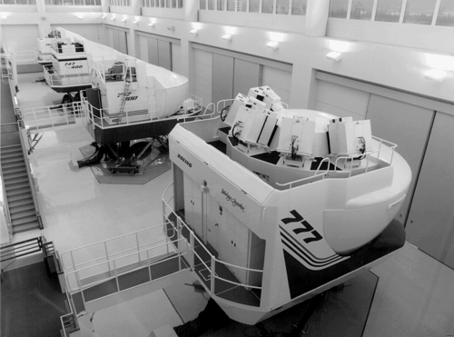

8.2 Requirements and Qualities
There are three roles involved in a flight training simulator. The first is that of the crew being trained. They sit inside a motion platform surrounded by instruments intended to replicate exactly the aircraft being simulated, and look at visuals that represent what would be seen outside an actual aircraft. We are not going to describe the specifics of either the motion platform or the visual display generator in this chapter. They are driven by special-purpose processors and are outside the scope of the architecture we describe here. The purpose of a flight simulator is to instruct the pilot and crew in how to operate a particular aircraft, how to perform maneuvers such as mid-air refueling, and how to respond to situations such as an attack on the aircraft. The fidelity of the simulation is an important element in the training. For example, the feel of the controls when particular maneuvers are performed must be captured correctly. Otherwise, the pilot and crew are being trained incorrectly and the training may be counter-productive.
The second role associated with a flight simulator is that of the environment. Typically, the environment is a computer model, although with multi-aircraft training exercises it can include individuals other than the pilot and crew. It comprises the atmosphere, threats, weapons, and other aircraft. For example, if the purpose of the training is to practice refueling, the (simulated) refueling aircraft introduces turbulence into the (modeled) atmosphere.
The third role associated with a flight training simulator is that of the simulation instructor. Usually, a training exercise has a specific purpose and specific circumstances. During the exercise, the instructor is responsible for monitoring the performance of the pilot and crew and for initiating training situations. Sometimes these situations are scripted in advance, and other times the instructor introduces them. Typical situations include malfunctions of equipment (e.g., landing gear that does not deploy correctly), attacks on the aircraft from foes, and weather conditions such as turbulence caused by thunderstorms. The instructor has a separate console to monitor the activities of the crew, to inject malfunctions into the aircraft, and to control the environment. Figure 8.2 shows a typical collection of modern flight simulators.
Courtesy of the Boeing Company.

USE OF MODELS
The models used in the aircraft and the environment are capable of being simulated to almost arbitrary fidelity. As an example of the range of fidelity, consider the modeling of the air pressure affecting the aircraft. A simple model is that the air pressure is affected only by the aircraft altitude. Somewhat more complicated is a model in which the air pressure is affected by altitude and local weather patterns. Modeling local weather patterns takes more computational power but allows consideration of updrafts and downdrafts. An even more complicated model with additional computational requirements is that the air pressure is affected by altitude, local weather patterns, and the behavior of nearby aircraft. One source of turbulence is an aircraft that has recently passed through the airspace of the aircraft being simulated.
A consequence of the capability to simulate the aircraft or the environment to almost arbitrary fidelity is that training simulators in the past always stressed the limits of computational power (and may always do so in the future). Since crew simulator training is an important portion of overall flight training, there are always strong arguments that slightly more fidelity will improve the training and hence the skill set of the crews being trained. Performance, therefore, is one of the important quality requirements for a flight simulator.
STATES OF EXECUTION
A flight simulator can execute in several states.
Operate corresponds to the normal functioning of the simulator as a training tool. Configure is used when modifications must be made to a current training session. For example, suppose the crew has been training in a single-aircraft exercise and the instructor wishes to switch to mid-air refueling. The simulator is then placed into a configure state. Halt stops the current simulation. Replay uses a journal to move through the simulation without crew interaction. Among other functions, it is used to demonstrate to the crew what they have just done, because the crew may get caught up in operating the aircraft and not reflect on their actions. "Record/playback" was identified in Chapter 5 (Achieving Qualities) as an architectural tactic for testing. Here we find it used as a portion of the training process.
The simulators we discuss in this chapter are characterized by the following four properties:
Real-time performance constraints.
Flight simulators must execute at fixed frame rates that are high enough to ensure fidelity. For those not familiar with frame rates, an analogy to motion pictures might be helpful. Each frame is a snapshot in time. When a sufficient number of frames are taken sequentially within a time interval, the user sees or senses continuous motion. Different senses require different frame rates. Common simulator frame rates are 30 Hz or 60 Hz —one-thirtieth or one-sixtieth of a second. Within each frame rate, all computations must run to completion.
All portions of a simulator run at an integral factor of the base rate. If the base rate is 60 Hz, slower portions of the simulation may run at 30, 20, 15, or 12 Hz, and so on. They may not run at a nonintegral factor of the base rate, such as 25 Hz. One reason for this restriction is that the sensory inputs provided by a flight simulator for the crew being trained must be strictly coordinated. It would not do to have the pilot execute a turn but not begin to see or feel the change for even a small period of time (say, one-tenth of a second). Even for delays so small that they are not consciously detectable, a lack of coordination may be a problem. Such delays may result in a phenomenon known as simulator sickness, a purely physiological reaction to imperfectly coordinated sensory inputs. Continuous development and modification.
Simulators exist to train users when the equivalent training on the actual vehicle would be much more expensive or dangerous. To provide a realistic training experience, a flight simulator must be faithful to the actual air vehicle. However, whether civilian or military, air vehicles are continually being modified and updated. The simulator software is therefore almost constantly modified and updated to maintain verisimilitude. Furthermore, the training for which the simulators are used is continually extended to encompass new types of situations, including problems (malfunctions) that might occur with the aircraft and new environmental situations, such as a military helicopter being used in an urban setting. Large size and high complexity.
Flight simulators typically comprise tens of thousands of lines of code for the simplest training simulation and millions of lines of code for complex, multi-person trainers. Furthermore, the complexity of flight simulators, mapped over a 30-year period, has shown exponential growth. Developed in geographically distributed areas.
Military flight simulators are typically developed in a distributed fashion for two reasons, one technical and one political. Technically, different portions of the development require different expertise, and so it is common practice for the general contractor to subcontract portions of the work to specialists. Politically, high-technology jobs, such as simulator development, are political plums, so many politicians fight to have a piece of the work in their district. In either case, the integrability of the simulator—already problematic because of the size and complexity of the code—is made more difficult because the paths of communication are long.
In addition, two problems with flight simulators caused the U.S. Air Force to investigate new simulator designs.
Very expensive debugging, testing, and modification.
The complexity of flight simulation software, its real-time nature, and its tendency to be modified regularly all contribute to the costs of testing, integrating, and modifying the software typically exceeding the cost of development. The growth in complexity (and its associated growth in cost) thus caused an emphasis for the architecture on integrability and modifiability.
One of the consequences of the growth in complexity was the increased cost of integration. For example, a large completed Air Force system (1.7 million lines of code) had greatly exceeded its budget for integration. Systems 50% larger were in concept, and they would have been prohibitively expensive. Hence, integrability emerged as a driving architectural concern. Unclear mapping between software structure and aircraft structure.
Flight simulators have traditionally been built with runtime efficiency as their primary quality goal. This is not surprising given their performance and fidelity requirements and given that simulators were initially built on platforms with extremely limited memory and processing power. Traditional design of flight simulator software was based on following control loops through a cycle. These, in turn, were motivated by the tasks that caused the loop to be activated. For example, suppose the pilot turns the aircraft left. The pilot moves the rudder and aileron controls, which in turn moves the control surfaces, which affects the aerodynamics and causes the aircraft to turn. In the simulator, a model reflects the relationship between the controls, the surfaces, the aerodynamics, and the orientation of the aircraft. In the original flight simulator architecture, this model was contained in a module that might be called Turn. There might be a similar module for level flight, another for takeoff and landing, and so forth. The basic decomposition strategy was based on examining the tasks that the pilot and crew perform, modeling the components that perform the task, and keeping all calculations as local as possible.
This strategy maximizes performance since any task is modeled in a single module (or a small collection of modules) and thus the data movement necessary to perform the calculations is minimized. The problem with this architecture is that the same physical component is represented in multiple models and hence in multiple modules. The extensive interactions among modules cause problems with both modifiability and integration. If the module that controls turning is integrated with the module that controls level flight, and a problem is discovered in the data being provided to the turning module, that same data is probably being accessed by the level flight module. For these reasons, there were many coupling effects to be considered during integration and maintenance.
The architectural pattern, called Structural Modeling, that resulted from the reconsideration of the problems of flight simulators will be discussed for the remainder of this chapter. In brief, the pattern includes an object-oriented design to model the subsystems and controller children of the air vehicle. It marries real-time scheduling to this object-oriented design as a means of controlling the execution order of the simulation's subsystems so that fidelity can be guaranteed.
|